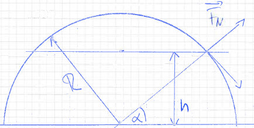

\(\star\) Um eine 50 kg schwere Kiste einen 3 m langen Flur entlang zu schieben, übt ein Arbeiter eine Kraft von 210 N unter einem Winkel von \(-20^\circ\) gegen die Horizontale aus, also von schräg oben. Welche Arbeit verrichtet:
die Kraft des Arbeiters,
das Gewicht der Kiste,
die Normalkraft vom Boden auf die Kiste?
Wohin muss die Kraft zeigen, damit sie Arbeit verrichten kann?
Als Kraft, die Arbeit verrichtet, wirkt nur die Komponente längs des Weges. Wirkt die Kraft schräg, multiplizieren wir sie mit dem Kosinus des Winkels (Skalarprodukt).
Die mechanische Arbeit des Arbeiters ist deshalb: \[W_{\text{Arbeiter}} = F \cdot \cos(20^\circ) \cdot 3\,\text{m} = 592\,\text{J}.\]
Gewichtskraft und Normalkraft stehen senkrecht und haben keine Komponente in Richtung des Weges. Sie verrichten deshalb keine Arbeit.
\(\star\) Ein Körper gleitet reibungsfrei eine schiefe Ebene unter dem Winkel \(\alpha\) hinunter. Der gesamte Höhenunterschied während des Gleitens beträgt \(h\).
Welche Arbeit verrichtet die Gewichtskraft?
In welcher Form ist die Arbeit am Ende gespeichert?
Wenden Sie die Energieerhaltung an.
Arbeit der Gewichtskraft, Energieerhaltung
Reibungsfrei, die mechanische Energie bleibt erhalten. Die verrichtete
Arbeit ist deshalb \[W = m \cdot g \cdot
h\] Diese Arbeit ist gespeichert in kinetischer Energie \[E = \frac{1}{2} m v^2.\] Über die
Arbeit:
Die Strecke \(L\) längs der schiefen
Ebene ist \[L =
\frac{h}{\sin(\alpha)}.\] Die resultierende Kraft längs der Ebene
ist \[F = m \cdot g \cdot
\sin(\alpha).\] Die Arbeit ist (Weg und Kraft sind parallel)
\[W = F \cdot L = m \cdot g \cdot
\sin(\alpha) \cdot \frac{h}{\sin(\alpha)} = m \cdot g \cdot h.\]
Im Gravitationsfeld ist die Arbeit unabhängig vom Weg.
\(\star\star\star\)Eine große Rutsche in einem öffentlichen Bad ist als halbkugelförmige Kuppel mit dem Radius \(R\) ausgeführt. Man steigt auf einer Treppe auf den höchsten Punkt der Halbkugel im Abstand \(R\) über dem Wasser und rutscht herunter. Beim Herabrutschen von der Kuppel löst man sich in der Höhe \(h\) über dem Wasser unweigerlich von der Kuppeloberfläche.
Wie groß ist die Geschwindigkeit am Ablösepunkt?
Wie groß ist die Höhe \(h\), bei der man sich ablöst?

Benutzen Sie die Erhaltung der mechanischen Energie und suchen Sie den Punkt, an dem die Normalkraft der Kugel auf Sie gleich 0 wird. Das ist, wenn Sie sich ablösen. Dann ist der Radialanteil der Gewichtskraft gleich der Zentripetalkraft.
Oben auf der Kuppel ist die mechanische Gesamtenergie gleich der potenziellen Energie, da die kinetische Energie \(0\) ist: \[E_{\text{tot}} = \frac{1}{2}mv^2 + mgR = 0 + mgR = mgR.\] Beim Ablösepunkt in der Höhe \(h\) gibt es kinetische Energie: \[E_{\text{tot}} = \frac{1}{2}mv^2 + mgh.\] Die gesamte mechanische Energie bleibt erhalten: \[mgR = \frac{1}{2}mv^2 + mgh.\] Die Masse \(m\) fällt links und rechts weg, die Gleichung ist unabhängig von der Masse: \[gR = \frac{1}{2}v^2 + gh.\]
Die resultierende Kraft in radialer Richtung ist: \[F_{\text{res}} = mg\sin\alpha - F_N = F_{\text{Rad}}\] (positive Koordinatenrichtung zum Zentrum der Kuppel hin). Wenn sich die Masse ablöst, verschwindet die Normalkraft \(F_N\) der Kuppel. Dann bringt die radiale Komponente der Gewichtskraft genau die Radialkraft auf, um den Körper auf der Kreisbahn zu halten.
Die radiale Komponente der Gewichtskraft ist: \[F_{G,\text{rad}} = mg\sin\alpha.\] Die Kraft, um den Körper auf der Kreisbahn zu halten, ist: \[F_{\text{Rad}} = m\frac{v^2}{R}.\] Beide gleichsetzen: \[mg\sin\alpha = m\frac{v^2}{R}.\]
Den Sinus können wir ausdrücken durch: \[\sin\alpha = \frac{h}{R}.\] Eingesetzt ergibt: \[mg\frac{h}{R} = m\frac{v^2}{R} \quad \text{oder} \quad v = \sqrt{gh}.\] Je größer \(h\) ist, desto größer darf \(v\) sein, bevor die Masse sich löst.
Die Geschwindigkeit zum Ablösen setzen wir in den Ausdruck für die Energieerhaltung ein: \[E_{\text{tot}} = mgR = \frac{1}{2}mv^2 + mgh \quad \rightarrow \quad gR = \frac{1}{2}gh + gh = \frac{3}{2}gh.\] Damit wird: \[h = \frac{2}{3}R.\] In dieser Höhe löst man sich von der Kuppel.
Die Höhe \(h\) können wir in den Ausdruck für \(v\) einsetzen: \[v = \sqrt{gh} = \sqrt{\frac{2}{3}gR}.\] Bei dieser Geschwindigkeit löst sich die Masse von der Kuppel.
\(\star\star\)Beim Curling wird der
Stein mit einer Anfangsgeschwindigkeit \(v_0\) auf eine horizontale Eisfläche
aufgesetzt, so dass er dann eine größere Strecke geradlinig gleiten
kann.
Welche Anfangsgeschwindigkeit besaß der Stein, wenn er bei dem
Gleitreibungskoeffizienten \(\mu_G =
0.027\) nach \(s =
65\,\text{m}\) zum Stillstand kommt? Die Luftreibung wird
vernachlässigt. Lösen Sie die Aufgabe über die Energie.
Die Anfangsenergie ist: \[E_{\text{kin}} = \frac{1}{2}mv_0^2.\] Während des Gleitens verrichtet die Reibungskraft Arbeit: \[W = F_R \cdot s = m \cdot g \cdot \mu \cdot s.\] Die Reibungskraft entzieht dem Stein mechanische Energie. Die gesamte kinetische Energie wird so vernichtet: \[\frac{1}{2}mv_0^2 = m \cdot g \cdot \mu \cdot s.\] Daraus erhalten wir die Anfangsgeschwindigkeit: \[v_0 = \sqrt{2 \cdot g \cdot \mu \cdot s}.\] Einsetzen der Werte (\(g = 9.81\,\mathrm{m/s^2}\), \(\mu = 0.027\), \(s = 65\,\mathrm{m}\)): \[v_0 = \sqrt{2 \cdot 9.81 \cdot 0.027 \cdot 65} \approx 5.87\,\mathrm{m/s}.\] Die Anfangsgeschwindigkeit des Steins beträgt also \(5.87\,\mathrm{m/s}\).
\(\star\) Gleitreibung
Berechnen Sie die Arbeit der Gleitreibungskraft beim Verschieben entlang einer geschlossenen Strecke von \(a\) nach \(b\) und zurück. Der Gleitreibungskoeffizient ist \(\mu_{\text{Gl}}\), die Masse ist \(m\). Der Abstand der Punkte \(a\) und \(b\) beträgt \(s\).
Ist diese Kraft eine konservative Kraft?
(a)Die Gleitreibungskraft der Unterlage am Klotz steht auf dem Hinweg und dem Rückweg entgegen der Bewegungsrichtung. Das Skalarprodukt \(\vec{F}_R \cdot d\vec{x}\) ist deshalb immer negativ. Die Arbeit der Gleitreibungskraft am Klotz ist: \[W_{a \rightarrow b \rightarrow a} = 2(-F)s = 2(-mg\mu)s.\] (b)Die Kraft ist nicht konservativ, weil die Arbeit entlang einer geschlossenen Kurve nicht null ist. Die Gleitreibungskraft zeigt immer entgegen der Geschwindigkeit. Eine konservative Kraft zeigt jedoch immer in die gleiche Richtung im Raum (z.B. Schwerkraft).
\(\star\star\)Welche Arbeit muss aufgewendet werden, um einen elastischen Ball, dessen elastische Rückstellkraft dem Kraftgesetz \(F = -kx^3\) folgt (\(k = 100\,\mathrm{N/m^3}\)):
ohne Vorspannung um \(1.0\,\mathrm{cm}\) zusammenzudrücken,
mit der Vorspannlänge von \(0.5\,\mathrm{cm}\) um \(1.0\,\mathrm{cm}\) auf \(1.5\,\mathrm{cm}\) zusammenzudrücken?
Beachten Sie, dass die Kraft nicht konstant ist. D.h. aus Kraft mal Weg wird Integral der Kraft über den Weg.
Die Arbeit ist das Skalarprodukt von Kraft und Weg. Da sich die Kraft ändert, müssen wir integrieren: \[W = \int_{x_1}^{x_2} F(x) \, dx = \int_{x_1}^{x_2} -kx^3 \, dx.\] Die Integration ergibt: \[W = -k \cdot \frac{1}{4} \left[ x^4 \right]_{x_1}^{x_2} = -\frac{k}{4} \left( x_2^4 - x_1^4 \right).\] Das ist die allgemeine Lösung.
1. Für \(x_1 = 0\,\mathrm{cm}\), \(x_2 = 1\,\mathrm{cm}\) und \(k = 100\,\mathrm{N/m^3}\): \[W = -\frac{100}{4} \left( (0.01)^4 - 0^4 \right) = -\frac{100}{4} \cdot 10^{-8} = -2.5 \cdot 10^{-7}\,\mathrm{J}.\] 2. Für \(x_1 = 0.5\,\mathrm{cm}\), \(x_2 = 1.5\,\mathrm{cm}\) und \(k = 100\,\mathrm{N/m^3}\): \[W = -\frac{100}{4} \left( (0.015)^4 - (0.005)^4 \right).\] Einsetzen der Werte: \[W = -\frac{100}{4} \left( 5.0625 \cdot 10^{-8} - 6.25 \cdot 10^{-10} \right).\] \[W = -\frac{100}{4} \cdot 4.9375 \cdot 10^{-8} = -1.25 \cdot 10^{-6}\,\mathrm{J}.\]
Für \(x_1 = 0\,\mathrm{cm}\), \(x_2 = 1\,\mathrm{cm}\): \(W = -2.5 \cdot 10^{-7}\,\mathrm{J}\).
Für \(x_1 = 0.5\,\mathrm{cm}\), \(x_2 = 1.5\,\mathrm{cm}\): \(W = -1.25 \cdot 10^{-6}\,\mathrm{J}\).
\(\star\)Ein vollbesetzter Bus hat die Masse \(10\,\mathrm{t}\).
Welche Arbeit bringt der Motor bei jedem Anfahren bis zum Erreichen einer Geschwindigkeit von \(30\,\mathrm{km/h}\) auf?
Wir vernachlässigen Verluste im Motor und durch Reibung.
Die Arbeit des Motors wird vollständig als kinetische Energie gespeichert.
Die Arbeit des Motors geht in kinetische Energie über: \[E = \frac{1}{2} m v^2.\]
Einsetzen der Werte: \[m = 10\,\mathrm{t} = 10\,000\,\mathrm{kg}, \quad v = \frac{30\,\mathrm{km/h}}{3.6} = 8.33\,\mathrm{m/s}.\]
Berechnung der kinetischen Energie: \[E = \frac{1}{2} \cdot 10\,000 \cdot (8.33)^2 = \frac{1}{2} \cdot 10\,000 \cdot 69.4 = 347\,000\,\mathrm{J} = 347\,\mathrm{kJ}.\]
\(\star\star\)Eine veränderliche Kraft wirkt auf einen \(3\,\mathrm{kg}\) schweren Körper, der sich reibungsfrei in horizontaler Richtung bewegt. Seine Position als Funktion der Zeit ist: \[x(t) = 3\,\mathrm{(m/s)} \cdot t + 4\,\mathrm{(m/s^2)} \cdot t^2 + 1\,\mathrm{(m/s^3)} \cdot t^3.\] Welche Arbeit wird durch die Kraft zwischen \(t = 0\,\mathrm{s}\) und \(t = 4\,\mathrm{s}\) verrichtet?
Überlegen Sie, wie die Arbeit als Energie gespeichert wird.
In der kinetischen Energie.
Wie kommen Sie nun von der Position \(x\) auf die Geschwindigkeit? Mit der
Kinematik.
Da sich der Körper reibungsfrei bewegt, bleibt die mechanische Energie erhalten. Die verrichtete Beschleunigungsarbeit geht in kinetische Energie über.
Die Geschwindigkeit \(v(t)\) erhalten wir durch Ableiten der Positionsfunktion \(x(t)\): \[v(t) = \frac{dx(t)}{dt} = A + 2Bt + 3Ct^2.\] Einsetzen der Werte: \[v(t) = 3 + 2 \cdot 4 \cdot t + 3 \cdot 1 \cdot t^2 = 3 + 8t + 3t^2.\]
Die kinetische Energie ist: \[E_{\text{kin}} = \frac{1}{2} m v(t)^2.\] Die Arbeit ist die Änderung der kinetischen Energie zwischen \(t = 0\,\mathrm{s}\) und \(t = 4\,\mathrm{s}\): \[W = \Delta E_{\text{kin}} = \frac{1}{2} m \left(v(4\,\mathrm{s})^2 - v(0\,\mathrm{s})^2\right).\] Berechnung der Geschwindigkeiten: \[v(0\,\mathrm{s}) = 3\,\mathrm{m/s},\] \[v(4\,\mathrm{s}) = 3 + 8 \cdot 4 + 3 \cdot 4^2 = 3 + 32 + 48 = 83\,\mathrm{m/s}.\] Berechnung der Arbeit: \[W = \frac{1}{2} \cdot 3 \left( 83^2 - 3^2 \right).\] \[W = \frac{1}{2} \cdot 3 \left( 6889 - 9 \right) = \frac{1}{2} \cdot 3 \cdot 6880 = 10320\,\mathrm{J}.\]
Die durch die Kraft verrichtete Arbeit beträgt: \[W = 10\,320\,\mathrm{J}.\]